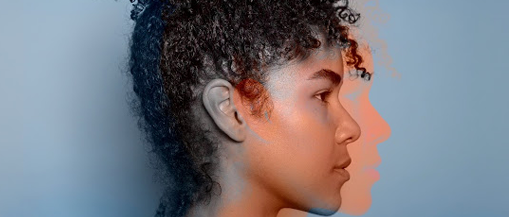
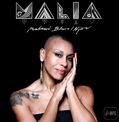
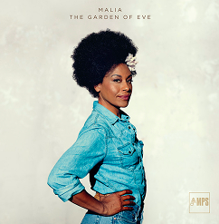
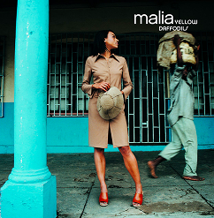

Malia
Malias Mutter stammt aus Malawi, der Vater ist Brite. Als Teenager siedelte sie aus ihrer Heimat über nach London und begann zu singen. 2001 hörte sie in New York zufällig ein Lied der Französin Liane Foly und war so fasziniert, dass sie mit dem Komponisten und Produzenten des Songs, André Manoukian, Kontakt aufnahm und seither mit ihm zusammen drei Alben herausbrachte. Ihr 2002 erschienenes Debütalbum Yellow Daffodils kam bei Kritikern und Publikum gut x und brachte ihr einen ersten Charterfolg.
Albums


